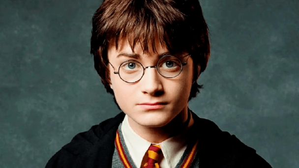
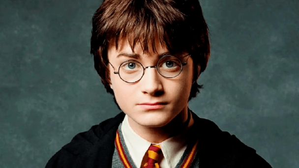
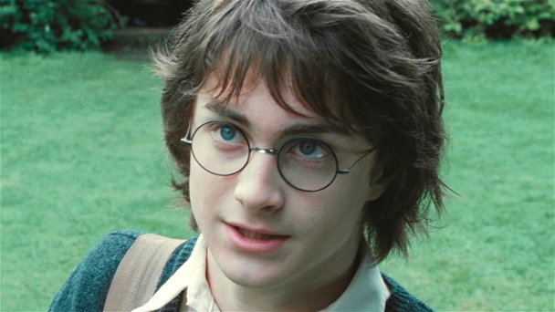
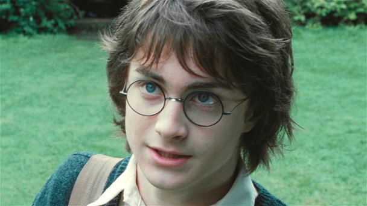

Tom Felton
Thomas Andrew Felton (n. 22 de septiembre de 1987) es un actor y cantante británico. Nacido en Kensington, Londres, se crió en Epsom con su madre, Sharon, su padre, Peter, y sus tres hermanos mayores, Jonathan, Ashley y Chris. Felton llamó la atención en 1995 cuando apareció en una serie de los mejores anuncios de televisión, en algunos de los cuales él tomó el papel protagonista. Él saltó a la fama, y en 1996 interpretó el papel de Peagreen Clock en The Borrowers de Peter Hewitt, y más tarde como Louis en la película Ana y el Rey, también protagonizada por Jodie Foster. Rumores se propagación sobre que Tom formaría parte de la serie Home Farm Twins, pero el espectáculo nunca salió de la cancelación. Antes de los años de Harry Potter, en 1995, fue también conocido por haber realizado la voz de James en la serie de televisión "Bichos". Más recientemente, sin embargo, él se ha hecho conocida por su interpretación de Draco Malfoy en las películas de Harry Potter. Felton también ha estado en varias series de televisión, como Second Sight I y II interpretando al testigo de Thomas Ingham junto a Clive Owen. Además, Felton es un cantante talentoso y ha sido miembro de cuatro coros durante su niñez. Recientemente, publicó sus propias canciones, en coordinación con "Feltbeats" que se pueden ver en Youtube. Él ha subido muchas pistas, cada una de él y su guitarra. Incluso se le ofreció un lugar en el coro de la catedral de Guildford. También le gusta el fútbol,patinaje sobre hielo, patinaje, baloncesto, cricket, natación y tenis. Su pasatiempo favorito es la pesca de carpas. A los 11 años, trabajó en una pesquería, en parte debido a su pasión. Su villano favorito en el cine es Alan Rickman en Robin Hood: Príncipe de los Ladrones retratando al Sheriff de Nottingham. Sus personajes favoritos de Harry Potter son Gilderoy Lockhart y Lucius Malfoy. Tom fue nominado y votado en el lugar decimocuarto en la Lista de la Revista Retrato, Top 30 bajo 30 del 2009. Otros compañeros de Felton del reparto de Harry Potter fueron nominados: Bonnie Wright, quien interpreta a Ginny Weasley estaba en segundo lugar, Evanna Lynch quien interpreta a Luna Lovegood se encontraba en el tercer lugar, Rupert Grint, que interpreta a Ron Weasley estaba en el quinto lugar, Emma Watson, quien interpreta a Hermione Granger estaba en octavo lugar y Daniel Radcliffe, que interpreta a Harry Potter estaba en décimo octavo lugar en la Lista de la Revista Retrato, Top 30 bajo 30 del 2009.
 

 
